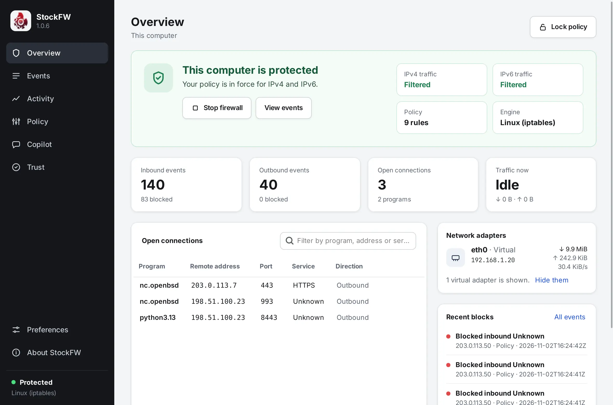
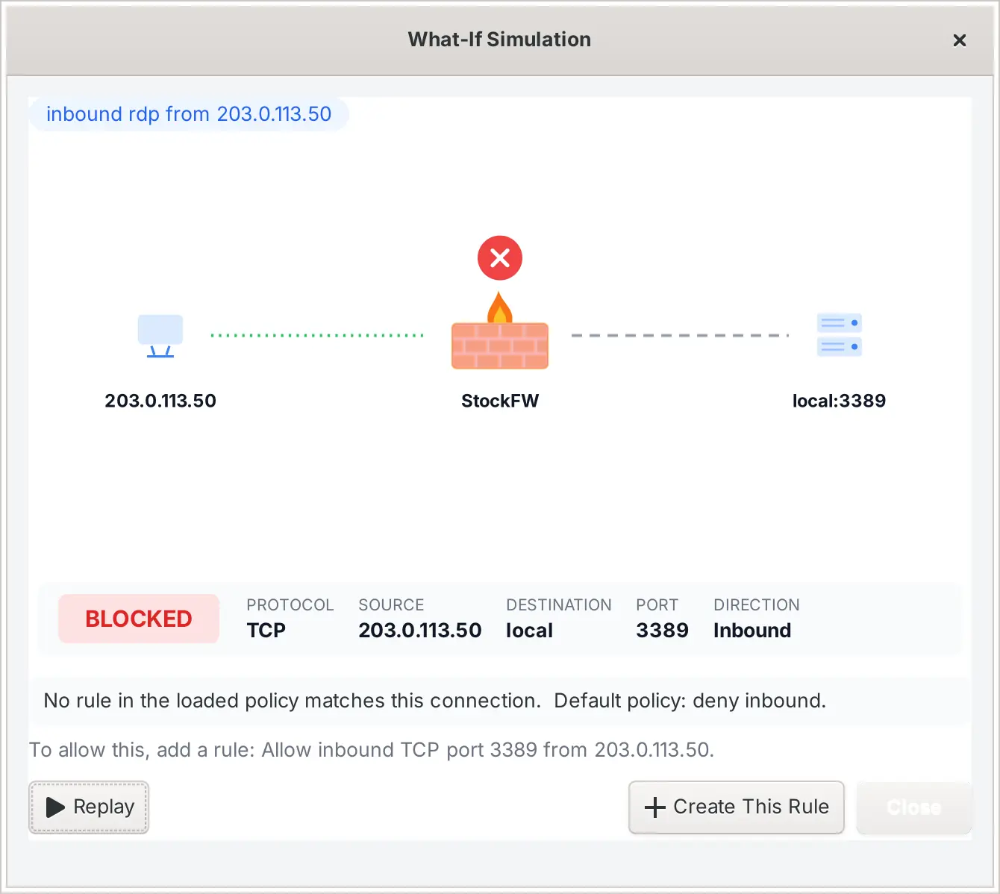

Your first ten minutes
This walk-through uses the real app on a small network, so what you see here is what you will see on your own computer. Start the app with the rights to change the firewall: StockFW (Elevated) on Windows, sudo /usr/local/bin/StockFW on Linux.
-
Read the Overview
The green or red card at the top answers the question you opened the app for. On a fresh install it says the firewall is stopped; press Start firewall. The card turns green, and the two small tiles say whether IPv4 and IPv6 traffic are filtered. On Linux, if
ip6tablesis missing, the IPv6 tile tells you instead of pretending.
After Start: protected, both families filtered, nine rules in force. -
Watch the Events page for a minute
Every connection the firewall decided appears as it happens. Red rows were blocked. Type part of an address, a port or a program name into the filter and the list narrows while you type; the count reads “3 of 1200 events” so an empty filter result cannot be mistaken for a quiet firewall. If the list stays empty, it tells you why: monitoring is off, or nothing matched.
-
Turn an event into a rule
Right-click a row. For an outbound connection you can block or allow the destination, or block just that service to it; for an inbound one you can trust the source. A dialog prints the exact rule it is about to write, you answer Yes or No, and the result says plainly whether the rule is live or only saved for the next Apply.

The right-click menu offers only what that row can express. -
Add a rule by hand
Open Policy. Rules are grouped by kind. In Allow inbound service, press Add, choose SSH on port 22 and type your LAN, for example
192.168.1.0/24, as who it is for. The row appears with its Covers column reading “IPv4 only”, because that network is an IPv4 network. A rule for “Anyone” covers both families.
Each rule says what it reaches, and why on hover. -
Apply, and read the impact first
Press Apply policy. Before anything happens, a dialog counts what will change against what is actually live: “+1 added (1 allow, 0 block), −0 removed, =8 unchanged”. Say Yes and the rule reaches the firewall; the result dialog reports what the engine said. If the engine refuses, the last good policy is put back and the dialog says whether that worked. Every attempt is one line in
audit.log.Not ready to change anything? Press Audit-only first. Apply then stages the change and writes the audit line while the firewall stays exactly as it is.
-
Ask the simulator
Open Copilot and type a question into the What-if box the way you would say it:
inbound rdp from 203.0.113.50. The verdict plays in a small window, the packet travelling from the source to the wall, and the text underneath names the rule that decided it, or says that no rule matched and the default applied. Simulating writes nothing. If the verdict is BLOCKED and you want it allowed, Create This Rule prints the rule and asks.
A question, not a change: nothing is written by simulating. -
Set up the tray
Open Preferences from the bottom of the sidebar. On the Interface page, Show a tray icon and Minimize to the tray keep StockFW running when you close the window. The tray icon’s tooltip carries the firewall state, so a glance answers the question the app exists for.
Where to go next#
- Policy explains every rule kind, what “Covers” means, and what Apply does step by step.
- Copilot explains insights, Sentinel and auto-block, and why none of it can open a port without you.
- On Linux, the command line does everything above from a terminal or a script, and the dashboard shows it in a browser.